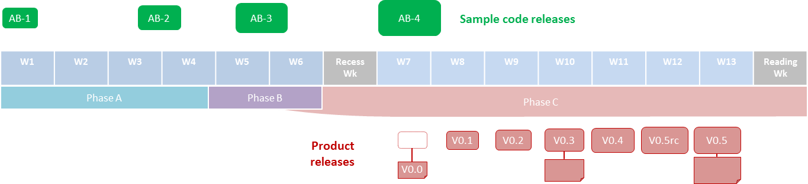

CS2103 project is structured to resemble the initial stages of a non-trivial real-life software project. In this project you will conceptualize a product and build a scaled-down version of the product, and have it ready to be continued by someone else.
To expedite your project implementation, you will be given some sample code that you can use as the basis for your project.
